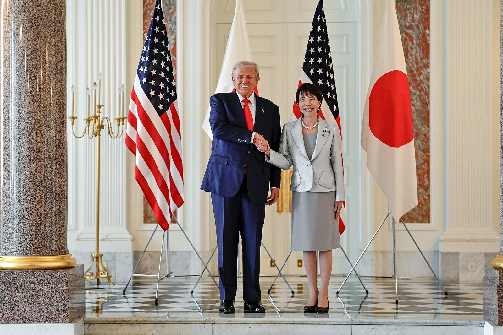

[한일수교 60년⑫] 무너졌다던 자민당 체제가 1년 만에 316석으로 돌아왔다
2024년 10월 과반 상실, 2025년 7월 참의원 패배, 2025년 9월 이시바 사퇴였다
2026년 2월 8일 자민당 316석… 1955년 창당 이래 최대, 단독 개헌 발의선 돌파
야당은 합당으로 123석을 잃었다, 빈자리를 채운 것은 정권교체 세력이 아니었다
AI경세제민=김갑봉 기자 | 2025년 9월 이시바 시게루 총리가 물러날 때 일본에서는 자민당 1당 우위가 끝났다는 분석이 나왔다. 2026년 2월 그 체제는 더 강한 형태로 돌아왔다.

※ 이 연재는 2025년 인천투데이에 실린 「한일수교 60년」 연재를 잇는다. 논지는 이어받되 수치와 사실은 2026년 10월 기준으로 다시 확인해 썼다.
붕괴로 읽혔던 2024~2025년
가. 두 번의 선거
2024년 10월 중의원 선거에서 자민당과 공명당 연립은 215석에 그쳐 과반을 잃었다. 2025년 7월 참의원 선거에서도 연립 신규 의석이 47석으로 과반 기준 50석에 미치지 못했다.
2025년 7월 참의원 선거 결과는 자민당 39석, 공명당 8석, 입헌민주당 22석, 국민민주당 17석, 일본유신회 7석, 참정당 14석, 일본공산당 3석, 레이와신선조 3석, 사회민주당 1석, 보수당 2석이었다.
나. 빈자리를 채운 쪽
참정당이 1석에서 14석으로, 국민민주당이 4석에서 17석으로 늘었다. 입헌민주당 지지율은 10% 안팎에 머물렀다.
과거사를 직시하는 쪽이 늘지 않고 극우와 보수 쪽이 늘었다. 이것이 2025년 분석의 핵심이었다.
다. 총재 교체
2025년 9월 7일 이시바 총리가 사퇴를 발표했다. 교도통신 9월 14일 조사에서 다카이치 사나에 28%, 고이즈미 신지로 22%였다. 10월 4일 투표에서 다카이치가 1차 181표를 얻어 총재가 됐다.
2026년 2월 8일의 결과
가. 316석
제51회 중의원 총선거에서 자민당이 316석을 얻었다. 125석 늘었다. 1955년 11월 보수 통합으로 당이 세워진 이래 최대다. 투표율은 비례대표 기준 56.25%로 2.4%포인트 올랐다.
개헌 발의선인 465석의 3분의 2, 310석을 자민당 혼자 넘었다. 일본유신회와 합쳐 352석이다. 2월 18일 특별국회에서 다카이치 총리가 354표로 재지명됐다.
나. 야당의 붕괴
입헌민주당과 공명당이 합당해 중도개혁연합을 만들었다. 49석을 얻었다. 선거 전 두 당 의석을 합친 것보다 123석 적다.
일본유신회 36석, 국민민주당 28석, 신당 팀미라이 11석, 일본공산당 4석, 레이와신선조 1석, 일본보수당 0석이다. 참정당은 3석에서 15석으로 늘었다.
다. 통계를 어떻게 읽을 것인가
자민당이 125석 늘고 야당 두 당이 합쳐 123석 잃었다. 거의 이전이다.
중도 성향 야당 두 당의 합당이 지지층을 넓히지 못하고 줄였다. 합당은 통상 조직 통합의 효과를 노리는 선택인데 2026년에는 반대로 작동했다.
'55년 체제'라는 틀의 재검토
1955년 11월 보수 통합 이후 자민당은 1993~1994년과 2009~2012년을 빼고 집권했다. 70년 가운데 65년이다.
2024~2025년의 과반 상실을 체제 붕괴로 읽은 분석은 틀렸다고 보기 어렵다. 당시 숫자는 실제로 그랬다. 틀린 것은 그 붕괴가 정권교체로 이어진다는 전제였다.
일본에서 자민당이 약해질 때 강해지는 쪽은 자민당보다 오른쪽이었다. 2025년에는 참정당과 국민민주당이었고 2026년에는 자민당 자신이었다.
김대중 전 대통령이 2006년 10월 11일 전남대 강연에서 지적한 것이 이 구조다. 일본에 민주주의를 스스로 쟁취한 주체 세력이 없다는 진단이다. 20년 뒤 두 번의 선거가 그 진단과 어긋나지 않았다.
그러면 일본은 바뀔 수 있는가
가. 제도는 바뀔 수 있다
2026년 자민당은 중의원에서 개헌을 혼자 발의할 수 있다. 참의원에서는 자민당과 유신회가 과반에 미치지 못한다. 3분의 2는 더 멀다.
여론도 뒷받침이 아니다. 2025년 5월 NHK 조사에서 헌법 9조 개정이 필요하다는 응답이 34%, 필요 없다가 28%, 의견 없음이 33%였다. 2026년 총선 출구조사에서 개헌을 최우선 쟁점으로 꼽은 유권자는 3%, 물가와 경제정책을 꼽은 응답이 49%였다.
제도 변경의 권한은 생겼고 동력은 약하다.
나. 정치는 바뀌기 어렵다
2026년 6월 지지통신 조사에서 다카이치 내각 지지율은 54.3%였다. 전월보다 5.1%포인트 내려갔고 비지지는 22.2%로 최고였다. 선거 과정의 비방 영상 의혹, 물가와 에너지 대응, 식품 소비세 인하 공약 후퇴가 이유로 꼽혔다.
지지율이 내려가도 의석은 그대로다. 316석은 다음 총선까지 유지된다. 유권자의 불만이 의회 구성으로 전달되는 경로가 막혀 있다.
이것이 2026년 일본 정치의 핵심 조건이다.
한국에 주는 뜻
가. 상대의 안정성이 높아졌다
일본의 내각이 1년에 세 번 바뀌던 국면이 끝났다. 협상 상대가 오래 남는다는 것은 합의의 이행 가능성이 높아진다는 뜻이다. 2026년 두 차례 정상회담에서 구체적 약정이 나온 배경이다.
나. 상대의 양보 가능성은 낮아졌다
316석을 쥔 정부가 국내 비판을 무릅쓰고 과거사에서 물러날 이유가 없다. 2025년 이시바 총리에게 한국 방문이 필요했던 까닭은 소수 여당이었기 때문이다.
다. 그래서 문서가 필요하다
안정성은 이용하고 양보 불가능성은 전제로 두는 전략이 필요하다. 받아 낼 수 있는 것을 문서로 확정하고, 받아 낼 수 없는 것은 계정을 열어 둔 채 기록을 쌓는 것이다.
2026년 10월 기준으로 한국은 첫 번째를 했다. 두 번째, 즉 과거사 기록의 체계적 축적은 정부보다 연구기관과 시민사회의 일로 남아 있다.
한국 민주주의와의 대조
한국은 1898년 만민공동회부터 1987년 6월항쟁, 그리고 촛불까지 민주주의를 안에서 만들었다. 1998년 여야 사이 첫 평화적 정권교체가 있었다.
이 대조는 우월의 근거가 아니라 작동 방식의 차이다. 안에서 만든 제도에서는 유권자의 불만이 정권교체로 전달된다. 일본에서는 2026년에도 그 경로가 작동하지 않았다.
일본이 바뀌려면 자민당보다 왼쪽에 집권 가능한 세력이 서야 한다. 2026년 2월의 결과는 그 세력이 합당으로도 서지 못했음을 보여 준다. 다음 총선까지 적어도 몇 해가 걸린다.
참고문헌
일본 총무성, 제51회 중의원 의원 총선거 개표 결과, 2026년 2월
일본 총무성, 제27회 참의원 의원 통상선거 결과, 2025년 7월
교도통신 자민당 총재 선거 관련 여론조사, 2025년 9월 14일
지지통신 여론조사, 2026년 6월 12~15일
인천투데이, 「한일수교 60년 ⑫」, 2025년 9월 15일
※ 이 기사는 AI 프로그램 클로드를 활용해 작성했습니다.
관련기사
- [한일수교 60년⑬] 사면초가의 숫자들, 중국 해경 92시간 8분과 접속수역 355일
- [한일수교 60년⑪] 일본은 넘어섰고, 2026년 2분기 SK하이닉스 D램 점유율은 39%에서 26%로 내려갔다
- [한일수교 60년⑭] 1년 전 포럼에서 들은 불안, 2026년에 거의 다 현실이 됐다
- [한일수교 60년⑩] 2026년 한일의 공통 약점은 희토류다, 그래서 공급망이 의제가 됐다
저작권자 © AI경세제민 무단전재 및 재배포, AI학습 및 활용 금지